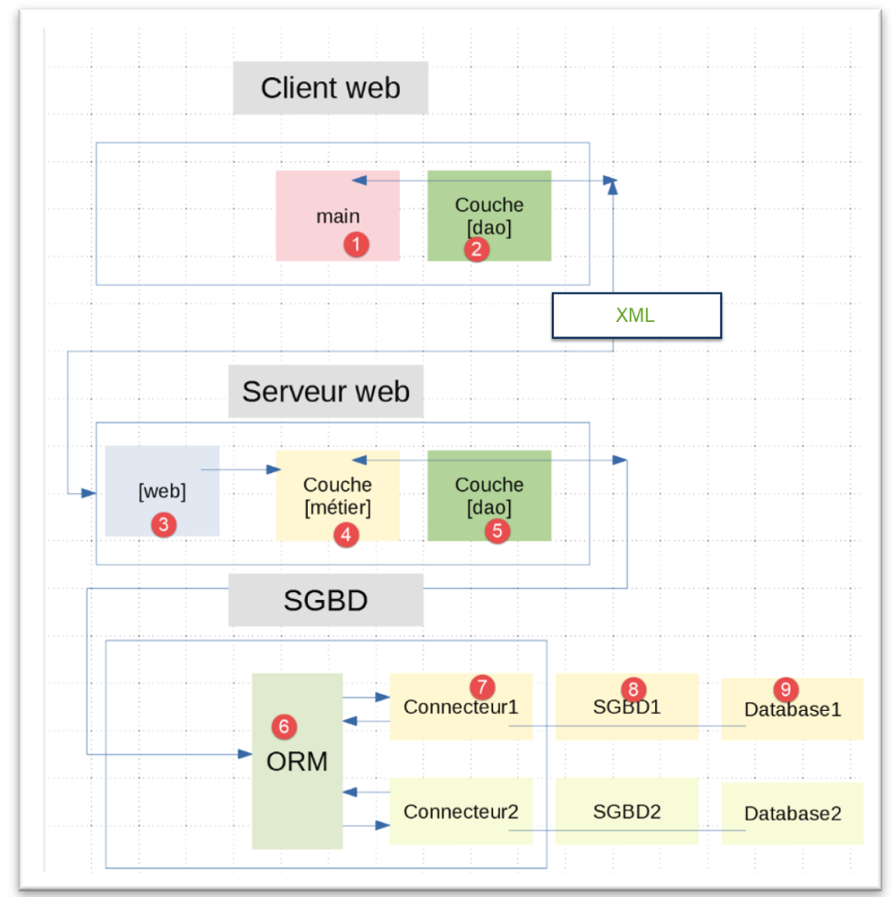
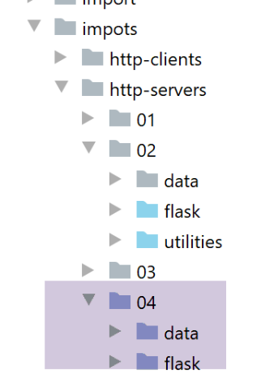
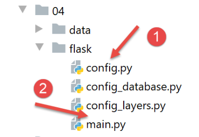
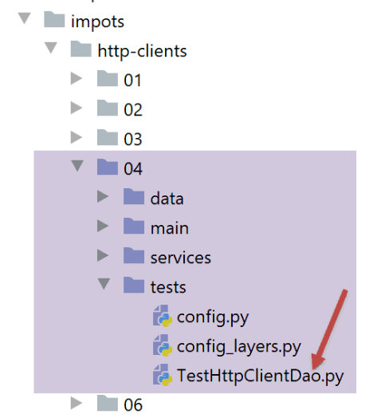

27. Exercice d’application : version 9
Nous revenons à la version 7 de l’exercice d’application et au lieu que le client et le serveur web s’échangent des chaînes jSON ils vont ici s’échanger du XML.
L’architecture reste la même :

27.1. Le serveur web

Le dossier [http-servers/04] est obtenue par recopie du dossier [http-servers/02] à l’exception du sous-dossier [utilities]. Puis on change les éléments suivants :

Le fichier [config] est modifié de la façon suivante :
| # dépendances absolues
absolute_dependencies = [
# dossiers du projet
# BaseEntity, MyException
f"{root_dir}/classes/02/entities",
# InterfaceImpôtsDao, InterfaceImpôtsMétier, InterfaceImpôtsUi
f"{root_dir}/impots/v04/interfaces",
# AbstractImpôtsdao, ImpôtsConsole, ImpôtsMétier
f"{root_dir}/impots/v04/services",
# ImpotsDaoWithAdminDataInDatabase
f"{root_dir}/impots/v05/services",
# AdminData, ImpôtsError, TaxPayer
f"{root_dir}/impots/v04/entities",
# Constantes, tranches
f"{root_dir}/impots/v05/entities",
# index_controller
f"{root_dir}/impots/http-servers/01/controllers",
# scripts [config_database, config_layers]
script_dir,
# Logger, SendAdminMail
f"{root_dir}/impots/http-servers/02/utilities",
]
|
- ligne 21 : on indique le dossier des utilitaires qui sont restés dans [http-servers/02] ;
Le script principal [main] évolue de la façon suivante :
| # Home URL
@app.route('/', methods=['GET'])
@auth.login_required
def index():
logger = None
try:
# logger
logger = Logger(config["logsFilename"])
# on le mémorise dans une config associée au thread
thread_config = {"logger": logger}
thread_name = threading.current_thread().name
config[thread_name] = {"config": thread_config}
# on logue la requête
logger.write(f"[index] requête : {request}\n")
…
# on fait exécuter la requête par un contrôleur
résultat, status_code = index_controller.execute(request, config)
# y-a-t-il eu une erreur fatale ?
…
# on logue la réponse
logger.write(f"[index] {résultat}\n")
# on envoie la réponse
return xml_response(résultat, status_code)
except BaseException as erreur:
# on logue l'erreur si c'est possible
if logger:
logger.write(f"[index] {erreur}")
# on prépare la réponse au client
résultat = {"réponse": {"erreurs": [f"{erreur}"]}}
# on envoie la réponse
return xml_response(résultat, status.HTTP_500_INTERNAL_SERVER_ERROR)
finally:
# on ferme le fichier de logs s'il a été ouvert
if logger:
logger.close()
|
- l’unique modification est ligne 23 : on envoie désormais une réponse XML ;
La fonction [xml_response] est définie dans le module [myutils] :
| import xmltodict
…
def xml_response(résultat: dict, status_code: int) -> tuple:
# résultat : le dictionnaire à transformer en chaîne XML
xmlString = xmltodict.unparse(résultat)
# on rend la réponse HTTP
response = make_response(xmlString)
response.headers['Content-Type'] = 'application/xml; charset=utf-8'
return response, status_code
|
- ligne 3 : la fonction [xml_response] reçoit en paramètres :
- le dictionnaire [résultat] à transformer en XML ;
- le code de statut [status_code] à renvoyer au client web ;
- ligne 5 : on utilise la bibliothèque [xmltodict] pour produire la chaîne XML ;
- ligne 8 : on utilise l’entête [Content-Type] pour dire au client qu’on lui envoie du XML ;
La fonction [xml_response] doit être importée dans le script [init.py] :
| from .myutils import set_syspath, json_response, decode_flask_session, xml_response
|
Puis le module [myutils] doit être incorporé dans les modules de portée machine. Cela se fait dans un terminal PyCharm avec la commande [pip install .] (dans le dossier packages).
27.2. Le client web
27.2.1. Le code
Le dossier [http-clients/04] est obtenu par recopie du client [http-clients/02]. Puis nous modifions la classe [ImpôtsDaoWithHttpClient] de la façon suivante :
| # imports
import requests
import xmltodict
from flask_api import status
from AbstractImpôtsDao import AbstractImpôtsDao
from AdminData import AdminData
from ImpôtsError import ImpôtsError
from InterfaceImpôtsMétier import InterfaceImpôtsMétier
from TaxPayer import TaxPayer
class ImpôtsDaoWithHttpClient(AbstractImpôtsDao, InterfaceImpôtsMétier):
# constructeur
def __init__(self, config: dict):
…
# méthode inutilisée
def get_admindata(self) -> AdminData:
pass
# calcul de l'impôt
def calculate_tax(self, taxpayer: TaxPayer, admindata: AdminData = None):
….
# code de statut de la réponse HTTP
status_code = response.status_code
# on met la réponse XML dans un dictionnaire
résultat = xmltodict.parse(response.text[39:])
# erreur si code de statut différent de 200 OK
….
|
- ligne 30 : la réponse HTTP [response] du serveur web est désormais une chaîne XML. Les logs montrent la nature de celle-ci :
| 2020-07-27 15:53:47.886283, Thread-2 : <?xml version="1.0" encoding="utf-8"?>
<réponse><result><marié>non</marié><enfants>2</enfants><salaire>100000</salaire><impôt>19884</impôt><surcôte>4480</surcôte><taux>0.41</taux><décôte>0</décôte><réduction>0</réduction></result></réponse>
|
La chaîne [<?xml version="1.0" encoding="utf-8"?>] compte 38 caractères. Par ailleurs, si on regarde le fichier de logs avec un éditeur hexadécimal, on voit que derrière cette chaîne il y a un caractère de saut de ligne \n. Puis vient la réponse <réponse>…</réponse>. La chaîne XML que nous devons convertir commence donc après les 39 premiers caractères de la chaîne XML. Elle commence à partir du caractère n° 39, le 1er caractère étant numéroté 0. Cette chaîne est obtenue par l’expression [response.text[39:]].
Si nous exécutons le client (suivez la procédure des exemples précédents), nous obtenons les mêmes résultats dans le fichier [résultats.json] que dans les versions précédentes. Les logs sont eux les suivants :
| 2020-07-27 16:21:14.015941, Thread-1 : début du thread [Thread-1] avec 2 contribuable(s)
2020-07-27 16:21:14.016940, Thread-1 : début du calcul de l'impôt de {"id": 1, "marié": "oui", "enfants": 2, "salaire": 55555}
2020-07-27 16:21:14.016940, Thread-2 : début du thread [Thread-2] avec 3 contribuable(s)
2020-07-27 16:21:14.018939, Thread-2 : début du calcul de l'impôt de {"id": 3, "marié": "oui", "enfants": 3, "salaire": 50000}
2020-07-27 16:21:14.019979, Thread-3 : début du thread [Thread-3] avec 3 contribuable(s)
2020-07-27 16:21:14.019979, Thread-3 : début du calcul de l'impôt de {"id": 6, "marié": "oui", "enfants": 3, "salaire": 100000}
2020-07-27 16:21:14.021938, Thread-4 : début du thread [Thread-4] avec 2 contribuable(s)
2020-07-27 16:21:14.021938, Thread-4 : début du calcul de l'impôt de {"id": 9, "marié": "oui", "enfants": 2, "salaire": 30000}
2020-07-27 16:21:14.021938, Thread-5 : début du thread [Thread-5] avec 1 contribuable(s)
2020-07-27 16:21:14.022939, Thread-5 : début du calcul de l'impôt de {"id": 11, "marié": "oui", "enfants": 3, "salaire": 200000}
2020-07-27 16:21:14.031942, Thread-1 : <?xml version="1.0" encoding="utf-8"?>
<réponse><result><marié>oui</marié><enfants>2</enfants><salaire>55555</salaire><impôt>2814</impôt><surcôte>0</surcôte><taux>0.14</taux><décôte>0</décôte><réduction>0</réduction></result></réponse>
2020-07-27 16:21:14.031942, Thread-1 : fin du calcul de l'impôt de {"id": 1, "marié": "oui", "enfants": 2, "salaire": 55555, "impôt": 2814, "surcôte": 0, "taux": 0.14, "décôte": 0, "réduction": 0}
2020-07-27 16:21:14.031942, Thread-1 : début du calcul de l'impôt de {"id": 2, "marié": "oui", "enfants": 2, "salaire": 50000}
2020-07-27 16:21:14.034941, Thread-4 : <?xml version="1.0" encoding="utf-8"?>
<réponse><result><marié>oui</marié><enfants>2</enfants><salaire>30000</salaire><impôt>0</impôt><surcôte>0</surcôte><taux>0.0</taux><décôte>0</décôte><réduction>0</réduction></result></réponse>
…
2020-07-27 16:21:17.055931, Thread-3 : fin du thread [Thread-3]
2020-07-27 16:21:17.059930, Thread-2 : <?xml version="1.0" encoding="utf-8"?>
<réponse><result><marié>non</marié><enfants>3</enfants><salaire>100000</salaire><impôt>16782</impôt><surcôte>7176</surcôte><taux>0.41</taux><décôte>0</décôte><réduction>0</réduction></result></réponse>
2020-07-27 16:21:17.060971, Thread-2 : fin du calcul de l'impôt de {"id": 5, "marié": "non", "enfants": 3, "salaire": 100000, "impôt": 16782, "surcôte": 7176, "taux": 0.41, "décôte": 0, "réduction": 0}
2020-07-27 16:21:17.060971, Thread-2 : fin du thread [Thread-2]
|
Côté serveur, les logs sont les suivants :
| 2020-07-27 16:32:04.983020, Thread-46 : [index] requête : <Request 'http://127.0.0.1:5000/?marié=oui&enfants=2&salaire=50000' [GET]>
2020-07-27 16:32:04.983020, Thread-46 : [index] mis en pause du thread pendant 1 seconde(s)
2020-07-27 16:32:04.984021, Thread-47 : [index] requête : <Request 'http://127.0.0.1:5000/?marié=oui&enfants=2&salaire=55555' [GET]>
2020-07-27 16:32:04.984021, Thread-47 : [index] mis en pause du thread pendant 1 seconde(s)
…
2020-07-27 16:32:07.001271, Thread-56 : [index] mis en pause du thread pendant 1 seconde(s)
2020-07-27 16:32:07.003078, Thread-54 : [index] {'réponse': {'result': {'marié': 'oui', 'enfants': 5, 'salaire': 100000, 'impôt': 4230, 'surcôte': 0, 'taux': 0.14, 'décôte': 0, 'réduction': 0}}}
2020-07-27 16:32:07.006078, Thread-55 : [index] {'réponse': {'result': {'marié': 'oui', 'enfants': 3, 'salaire': 200000, 'impôt': 42842, 'surcôte': 17283, 'taux': 0.41, 'décôte': 0, 'réduction': 0}}}
2020-07-27 16:32:08.002824, Thread-56 : [index] {'réponse': {'result': {'marié': 'non', 'enfants': 2, 'salaire': 100000, 'impôt': 19884, 'surcôte': 4480, 'taux': 0.41, 'décôte': 0, 'réduction': 0}}}
|
- le logueur continue à écrire le dictionnaire de la réponse et non la chaîne XML qui est envoyée au client. Ce n’est pas une erreur et c’est voulu ;
27.2.2. Test de la couche [dao] du client

La classe de test [TestHttpClientDao] est la même que dans la |version 7| et donne les mêmes résultats.